Platform & Compute #FF3621 10 ZIP
databricks
The Databricks logo mark. Use it to label the platform boundary in an architecture diagram.
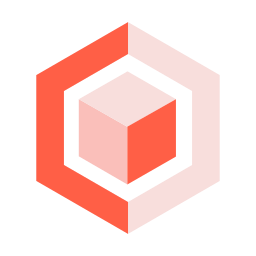
data-intelligence-platform
The unified platform for data engineering, analytics, AI and governance on one lakehouse foundation.
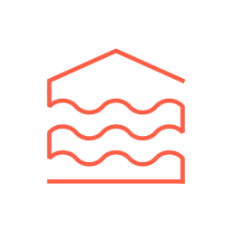
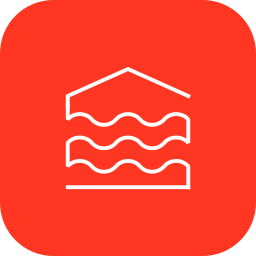
lakehouse
Open architecture combining data lake economics with warehouse reliability and ACID management.
apache-spark
Managed, autoscaling Apache Spark for large-scale batch, streaming and ML processing.
photon
A native C++ vectorized query engine. It accelerates SQL and DataFrame work with no code changes.
compute-clusters
All-purpose and job compute resources that run notebooks, pipelines and jobs.
serverless-compute
Fully managed, versionless compute that starts in seconds and autoscales without cluster administration.
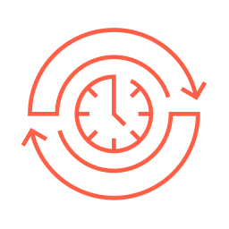
databricks-runtime
An optimized runtime image with Spark, Delta and ML libraries. The ML variant adds GPU frameworks and AutoML.
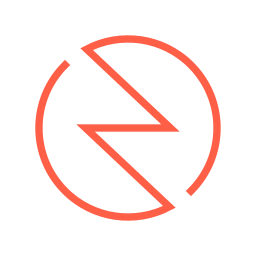
spark-real-time-mode
Structured Streaming execution mode delivering millisecond latency for time-critical pipelines.
multicloud
The same platform and governance model deployed across AWS, Azure and Google Cloud.
Data Engineering #2272B4 9 ZIP
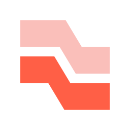
lakeflow
The unified data engineering suite covering ingestion, declarative transformation and orchestration.
lakeflow-connect
Managed ingestion with 100+ connectors for SaaS applications, databases and cloud storage.
zerobus-ingest
Broker-free streaming ingest over gRPC, REST and OpenTelemetry with roughly five-second freshness.
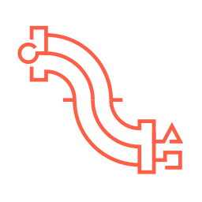
spark-declarative-pipelines
Declarative batch and streaming ETL with built-in data quality expectations, CDC and dependency management.
Lakeflow Declarative Pipelines. Formerly Delta Live Tables (DLT)
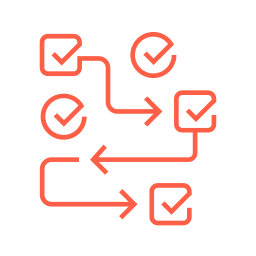
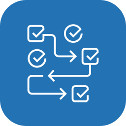
lakeflow-jobs
Native orchestration for data, analytics and AI workflows, with control flow, retries and alerting.
formerly Databricks Workflows
lakeflow-designer
No-code, drag-and-drop pipeline authoring that generates governed, production-ready pipeline code.
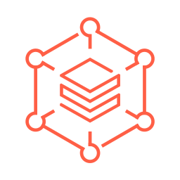
auto-loader
Incrementally and idempotently ingests new files from cloud object storage as they arrive.
structured-streaming
The Apache Spark API for exactly-once stream processing in continuous, incremental pipelines.
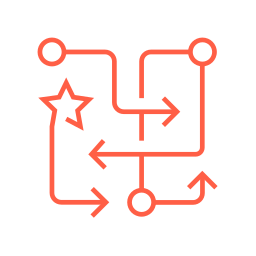
lakebridge
Migration tooling that profiles legacy warehouses, converts code to ANSI SQL and validates the results.
Storage & Databases #00875C 6 ZIP
delta-lake
Open table format adding ACID transactions, time travel and change data feed to object storage.
apache-iceberg
First-class managed and foreign Iceberg tables, readable and writable through Unity and Iceberg REST catalogs.
lakehouse-storage
Self-optimizing managed Delta and Iceberg tables with automatic layout, compaction and caching.
liquid-clustering
Partition-free, self-tuning data layout that adapts clustering keys to real query patterns.
predictive-optimization
AI-driven background maintenance that runs OPTIMIZE, VACUUM and statistics where they pay off most.
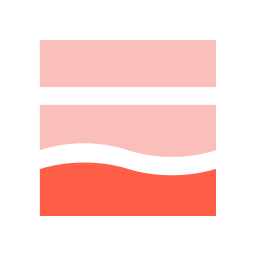
lakebase
Serverless Postgres OLTP database with branching, scale-to-zero and native lakehouse sync for apps and agents.
Analytics & BI #1B5162 7 ZIP
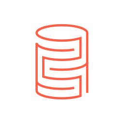
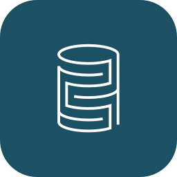
data-warehousing
Serverless data warehouse built on open table formats and governed by Unity Catalog.
databricks-sql
The SQL surface of the lakehouse: warehouses, editor, queries, alerts and BI connectivity.
sql-warehouse
Serverless, Photon-powered SQL compute endpoint for BI tools, dashboards and ad hoc queries.
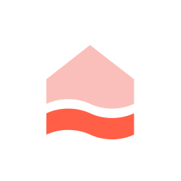
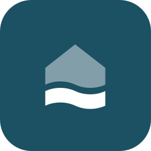
lakehouse-rt
Real-time warehouse tier serving millisecond queries at high concurrency directly on lake tables.
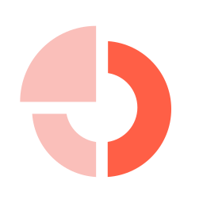
ai-bi
The built-in business intelligence experience spanning dashboards, Genie spaces and semantics.
ai-bi-dashboards
Dashboards with natural-language chart authoring and forecasting. Publication needs no separate license.
lakehouse-federation
Query and govern external systems such as Snowflake, BigQuery, Postgres and MySQL in place, without moving data.
AI & Agents #98102A 16 ZIP
genie
The agentic AI experience that answers questions and acts on governed enterprise data.
genie-one
AI coworker hub where business users ask questions, get grounded answers and trigger agentic actions.
genie-agents
Governed natural-language analytics spaces that answer business questions over curated data.
formerly AI/BI Genie spaces
genie-code
Agentic coding partner for data teams that builds pipelines, dashboards, notebooks and ML workflows.
genie-deep-research
Multi-step research agent that investigates a question across governed data and returns a cited report.
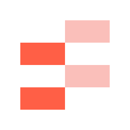
agent-bricks
Platform for building, evaluating and governing enterprise AI agents grounded in your own data.
ai-search
Managed hybrid vector and BM25 search with auto-syncing indexes and built-in reranking.
formerly Databricks Vector Search / Mosaic AI Vector Search
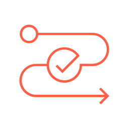
unity-ai-gateway
Single control plane for model, MCP and agent access with guardrails, rate limits, budgets and audit.
document-intelligence
SQL-native parsing, extraction and classification that turns PDFs and images into governed structured data.
model-serving
Unified serverless endpoints for custom ML models, foundation models and agents, plus batch inference.
formerly Mosaic AI Model Serving
model-training
Managed fine-tuning and custom model training on serverless H100 GPUs, without moving data.
mlflow
Hosted MLflow for experiment tracking, GenAI tracing, evaluation and the Unity Catalog model registry.
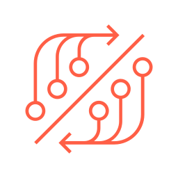
feature-store
Governed feature registry with batch and low-latency online serving, and training/serving consistency.
ai-functions
SQL functions such as ai_query, ai_classify and ai_extract that call models directly inside queries.
automl
Glass-box automated training that produces baseline models plus the editable notebooks that built them.
customerlake
Agentic customer data platform with identity resolution, Customer 360 and marketing agents, native to the lakehouse.
Governance & Security #1B3139 8 ZIP
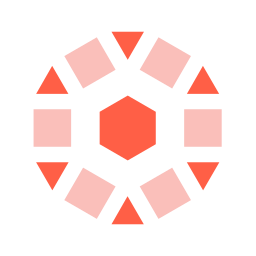
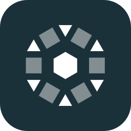
unity-catalog
Unified governance for data, models, agents and MCP servers across clouds, under one permission model.
unity-catalog-semantics
Central semantic layer of metric views and business definitions that grounds BI tools and AI agents.
data-lineage
Automatic column-level lineage across tables, dashboards, models and agents for impact analysis and audit.
abac
Tag- and attribute-driven policies that enforce row, column and object permissions at scale.
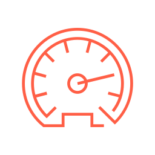
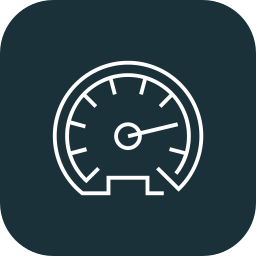
data-quality-monitoring
Automated profiling, freshness checks and anomaly detection over tables and inference logs.
formerly Lakehouse Monitoring
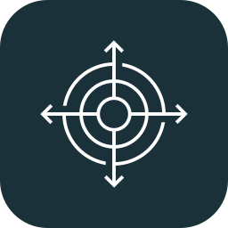
lakewatch
Open agentic SIEM for petabyte-scale security logs, detection-as-code and AI-assisted threat hunting.
system-tables
Built-in analytical tables exposing billing, usage, lineage, audit and job history for observability.
enterprise-security
Network isolation, customer-managed keys, private connectivity and compliance controls for the workspace.
Sharing & Collaboration #BA7B23 5 ZIP
delta-sharing
An open protocol for live, zero-copy data sharing across clouds, platforms and organizations.
opensharing
Linux Foundation standard extending governed sharing to data, models and agents across engines and clouds.
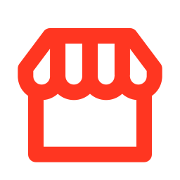
marketplace
Open exchange for datasets, models, notebooks, dashboards and solution accelerators.
clean-rooms
Privacy-safe multi-party collaboration on shared data with no raw-data access, across clouds.
partner-connect
Guided setup that wires validated ingestion, BI and governance partner tools into your workspace.
Developer Tools & Apps #618794 10 ZIP
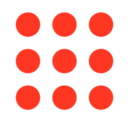
databricks-apps
Serverless hosting for Python data and AI apps built with Streamlit, Dash or Gradio, with Unity Catalog auth.
notebooks
Collaborative multi-language notebooks with built-in visualisation, versioning and AI assistance.
workspace
A collaborative environment. It groups the notebooks, queries, dashboards, jobs and files of each team.
git-folders
Workspace folders backed by Git for branch-based development and CI/CD.
asset-bundles
Infrastructure-as-code packaging of jobs, pipelines and apps for repeatable multi-environment deploys.
databricks-cli
Command-line client for workspaces, jobs, compute, Unity Catalog and bundle deployment.
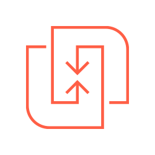
databricks-connect
Run local DataFrame code against remote Databricks compute from any IDE or application.
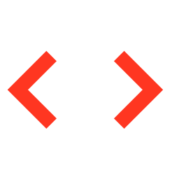
ide-integrations
Official VS Code and PyCharm extensions for editing, syncing, running and debugging on Databricks.
rest-api
Programmatic control of every platform resource, with official Python, Java, Go and JavaScript SDKs.
terraform-provider
Official Terraform provider for declaring workspaces, compute, Unity Catalog objects and permissions.
No products match that search.